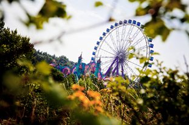

Tomorrowland day #2: Swedish House Mafia, Cocoon Heroes, Paul van Dyk


Tomorrowland exploded on Saturday, with a day that somehow packed in even more surprises, spectacle and ecstatic crowd energy than on Friday. The insane setup on the mainstage hosted Martin Solveig, Skrillex in his exclusive European festival performance for the season, and of course one of the final sets from the Swedish House Mafia, a triumphant performance that saw every square inch of the De Schorre National Park’s natural ampitheatre packed to the brim. Every couple of minutes it seemed like there was fireworks going off, confetti exploding over the crowd or plumes of blue smoke swelling up from the front of the stage.
If your musical tastes lay elsewhere though, you were more than well catered for. ‘Cocoon Heroes’ hosted an arena underneath the gorgeous Eastern-religion-themed stage by the lake, four pillars holding up a grand circular canvas with several large Buddhas up the front drawing your attention to the stage. During the day fans were treated to sets from Seth Troxler, Extrawelt and or course Sven Vath himself.
Elsewhere, the Q-dance stage kept the crowd jumping all day, while Paul van Dyk hosted a ‘Evolution’ arena over at the Castle Stage, a grand and colourful design that boasts the second best set-up of the whole festival. PVD played at sundown, also flanked on the decks by the likes of Ferry Corsten, Marco V, Aly & Fila, Kyau & Albert and Porter Robinson.
Check out the photos taken during the second day of Tomorrowland. Keep your eyes peeled for more coverage.